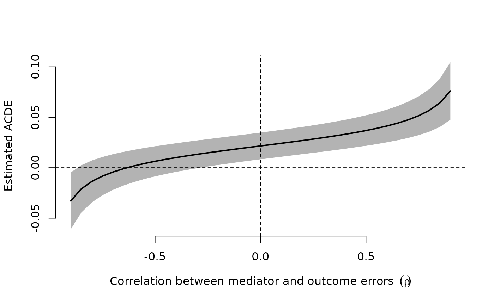

Estimate sensitivity of ACDE estimates under varying levels of unobserved confounding
Source:R/sens.R
cdesens.RdEstimate how the Average Controlled Direct Effect varies by various levels of
unobserved confounding. For each value of unmeasured confounding, summarized as
a correlation between residuals, cdesens computes the ACDE. Standard
errors are computed by a simple bootstrap.
Arguments
- seqg
Output from sequential_g. The function only supports specifications with one mediator variable.
- var
A character indicating the name of the variable for which the estimated ACDE is being evaluated.
- rho
A numerical vector of correlations between errors to test for. The original model assumes
rho = 0- bootstrap
character of c("none", "standard"), indicating whether to include bootstrap standard errors. Default is "none".
- boots_n
Number of bootstrap replicates, defaults to 100.
- verbose
Whether to show progress and messages, defaults to
FALSE- ...
Other parameters to pass on to
lm.fit()when refitting the model
Examples
data(civilwar)
# main formula: Y ~ A + X | Z | M
form_main <- onset ~ ethfrac + lmtnest + ncontig + Oil | warl +
gdpenl + lpop + polity2l + relfrac | instab
# estimate CDE
direct <- sequential_g(form_main, data = civilwar)
# sensitivity
out_sens <- cdesens(direct, var = "ethfrac")
# plot sensitivity
plot(out_sens)
